マニュアルについて
DSSF3のデータベースは測定用、研究用に開発された大容量ISAMデータベースです。測定時の大量なデータを、RA（リアルタイムアナライザ）で、記録日時、パラメーター設定、各種設定の値とともに自動記録し、さらにその後、統計ソフトに移して解析したり、SA（音響分析システム）で膨大な計算結果を効率よく調べて分析するためのシステムです。
リアルタイム分析
オシロスコープ：
複雑な設定なしでも自動調整機能によってリアルタイムに入力信号を表示します。2chモード、X-Yモード（リサージュ曲線）、測定スクリーンのスナップショットなど、様々な機能を装備しています。
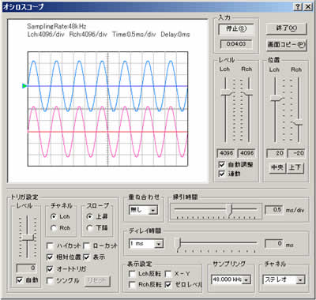
FFTアナライザ：
9つの測定モード（パワースペクトル、オクターブバンド、3次元表示、相関関数、位相差、声紋、クロススペクトル、コヒーレンス関数、ケプストラム）が利用できます。ボイストレーニングや言語療法など、幅広く活用できます。
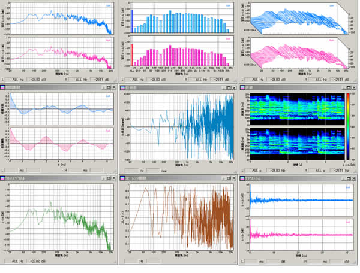
マイク校正：
マイクの音圧レベル(SPL)、入力レベル感度を簡単な操作で調整できます。マイクの周波数特性表のデータを登録して補正したり、マイクアンプ使用の有無など運用の仕方に合わせて登録できます。
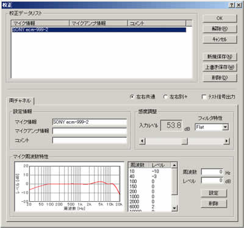
シグナルジェネレータ：
7つの機能（トーン、ノイズ、スイープ、パルス、合成（複合音）、音階、波形）があり、2chの正弦波、三角波、方形波、のこぎり波などの指定周波数のトーン信号、ホワイトノイズ、ピンクノイズなどの雑音、トーン信号を時間ごとのオクターブで変化させたスイープ音、パルス信号を指定回数、指定の長さ、指定間隔で出力します。
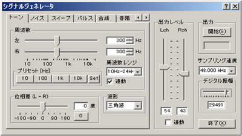
データ記録
録音再生：
録音した音の再生と同時に、リアルタイムアナライザ、オシロスコープで測定したり、WAVEフォーマットのファイルを読込み、再生、測定することも可能です。
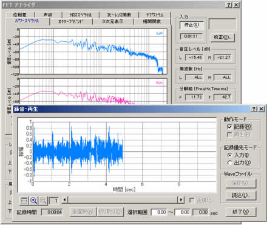
データ記録/オクターブバンド出力：
FFTアナライザのデータ記録機能は、オクターブ分析の結果を指定された間隔で自動的に記録し、記録したデータをCSVフォーマットで保存することもできます。
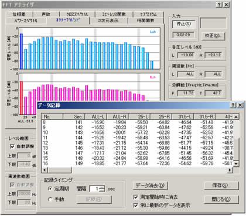
画面コピー：
画面コピー機能は、FFTアナライザとオシロスコープで利用できます。測定スクリーンのスナップショットをワンクリックでいくつでも作成することができ、そのデータは、測定結果の比較や印刷に便利です。
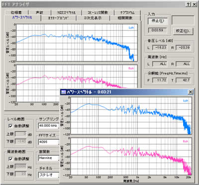
MMLIBデータ出力：
画像データベースソフト（MMLIB）を使って、測定データと測定スクリーン画像を簡単な操作でデータベースに保存することができます。
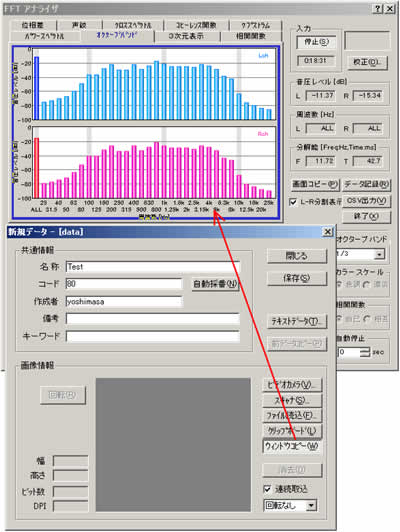
測定機能
周波数測定：
周波数に対するレベルの変化をグラフ化し、周波数スイープ、スポット周波数、ピンクノイズの３種類の方法で測定を行うことができます。
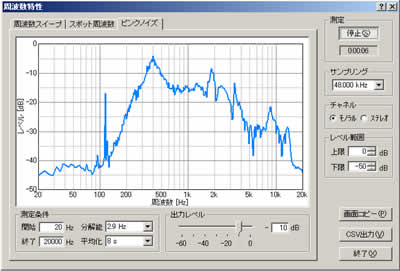
歪率測定：
歪率測定機能を使用して、アンプやスピーカの周波数および出力レベルに対する歪み率を、自動的にグラフ化することができます。
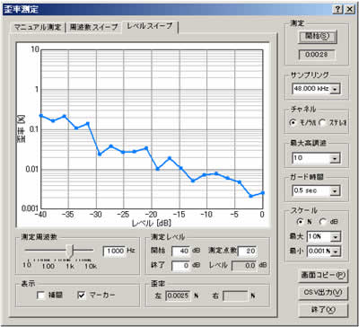
インパルス測定：
M系列信号またはTSP信号を用いて測定を行い、その結果を表示、保存します。データベースやWAVEファイル、CSVファイルに出力することができます。また、測定条件の設定をアシストする機能、マイクやスピーカの不要なレスポンスを取り除く逆フィルタを使用することもできます。
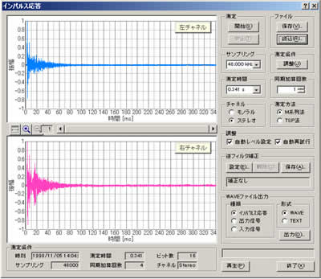
ACF測定：
ランニングACFの測定と三次元表示、及び測定データのデータベースへの保存を行うことができます。
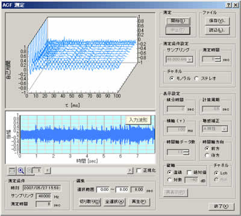